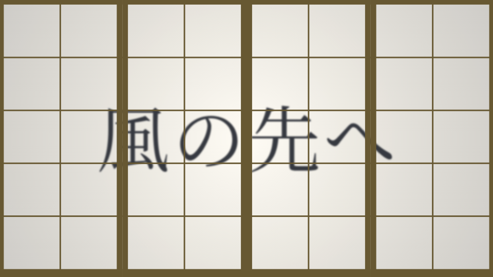

Cfalse native / Ctrue staged, same new source; not f828 baseline pixels. Original workload, 960×540, t=1.5. Transport equality only; conflict, never safe.
native: 0848b28f29048190fd15970efd02275f7d83f3bb56dd39bb59a985902545df63 / staged: 0848b28f29048190fd15970efd02275f7d83f3bb56dd39bb59a985902545df63

native: 1e39cf71cc030ca2df48fe0240dd32e8069f5ac6284326591df010a28dc21390 / staged: 1e39cf71cc030ca2df48fe0240dd32e8069f5ac6284326591df010a28dc21390